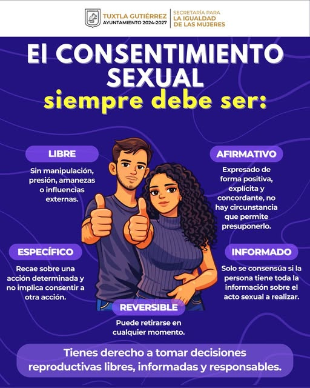
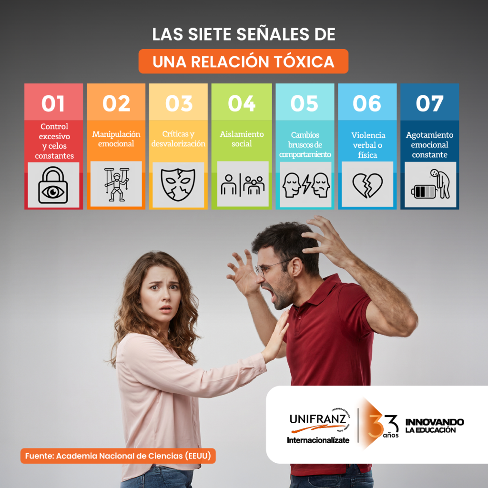

| Inicio | Concepto | Psicología | Sociedad | Prevención | Conclusiones |
La educación es una de las herramientas más importantes para prevenir situaciones de riesgo y fomentar relaciones saludables. Una persona informada tiene mayores posibilidades de tomar decisiones responsables y comprender las consecuencias de sus acciones.
Los programas educativos permiten desarrollar habilidades de comunicación, empatía y pensamiento crítico, elementos fundamentales para la convivencia social.
La información adecuada favorece decisiones responsables.

La comunicación permite expresar pensamientos, emociones y límites de manera clara. Cuando las personas se comunican con respeto es más fácil evitar malentendidos y resolver conflictos.
| Aspecto | Beneficio |
|---|---|
| Escucha activa | Mayor comprensión. |
| Diálogo | Menos conflictos. |
| Empatía | Mejor convivencia. |
| Respeto | Relaciones más saludables. |
Existen comportamientos que pueden indicar problemas dentro de una relación interpersonal. Reconocer estas señales ayuda a buscar apoyo y prevenir situaciones negativas.
Reconocer señales de alerta permite actuar de manera oportuna.

Las redes de apoyo están formadas por personas e instituciones que brindan orientación y ayuda cuando se necesita. Contar con apoyo familiar, escolar y social puede marcar una diferencia importante en situaciones difíciles.
| Recomendación | Importancia |
|---|---|
| Informarse adecuadamente | Permite tomar mejores decisiones. |
| Dialogar | Favorece la comprensión mutua. |
| Respetar límites | Fortalece la confianza. |
| Buscar ayuda cuando sea necesario | Reduce riesgos y problemas. |
| Promover la empatía | Mejora la convivencia. |
EDUCACIÓN RESPETO COMUNICACIÓN EMPATÍA PREVENCIÓN
UNESCOpromueve la educación como una herramienta para el desarrollo social.
La prevención comienza con la información.
La desinformación puede generar riesgos innecesarios.
La comunicación es el puente entre las personas.
La prevención se fortalece mediante la educación, la comunicación y el respeto. Una sociedad informada y responsable tiene mayores posibilidades de construir ambientes seguros donde las personas puedan desarrollarse plenamente y tomar decisiones conscientes.